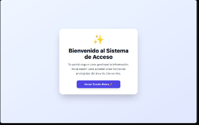

Módulo de Autenticación Segura
Node.js
Express
JWT
Bcrypt
React
PostgreSQL
Descripción Técnica
Desarrollé un sistema robusto de autenticación y autorización para aplicaciones web, priorizando la seguridad de los datos del usuario y la integridad de las sesiones.
Funcionalidades Implementadas
- Seguridad de Credenciales: Encriptación de contraseñas mediante Bcrypt y validación de identidad .
- Tokens de Acceso: Implementación de JSON Web Tokens (JWT) para el manejo de sesiones y protección de endpoints del API.
- Rutas Protegidas: Middleware en el frontend para restringir el acceso a componentes privados según el estado de autenticación.
